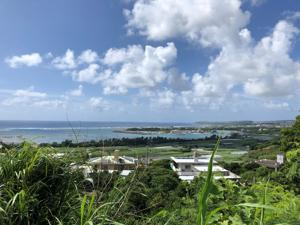
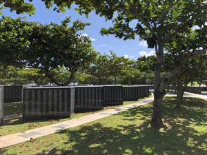
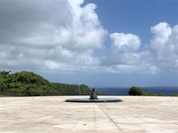
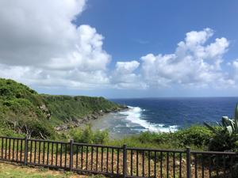

うるがいの話 ある日
最新: 野原の中のお墓うるがいとは 前提知識です
カニの画像をクリックすると『うるがいの話』サイトを表示します|
|
【うるがいの話】 うるがい(ｳﾙｶﾞｲ urugai)とは、『もずくがに』の名前でとても大きくなります。 |
|---|---|
|
|
【Got cat カミマヤーの話】 たながー（ﾀﾅｶﾞｰtanagaa）とは手長えびのことで、何種類かあり大きいのは車 エビぐらいになります。 |

|
【ぶながぁの話】 ぶながー(bunagaa)とは、赤い髪の毛、赤い身体、そして身長は１ｍ２０ｃｍ ぐらい、川の蟹を食べているの目撃された。場所は沖縄県国頭郡大宜味村のと ある村僕の隣近所に住んでいる爺さんから、聞いた話です。 |
|
|
【ギーマの話】 ギーマ(giima)とは、山原の里山に咲くスズランに似た、 花を付けます。実は食べられます、 気が付くと口の周りが紫になっています。 |
2021年10月14日 (木）野原の中のお墓
16:18
   
おととい、野原の広い場所でお墓がある所にいく夢をみた。いつの間にか傍に
亡くなった母親が居て、ここが墓だよと説明する。変な夢だなと・・・。今日
は天気が良い、先月バイクを乗ったのは１回きり、それも８キロと少ない。さ
てどこへ行こうか、・・、平和祈念公園の平和の礎でも行ってみるか。そこは
夢に似て広い野原のような場所にある。太平洋周りで海を眺めながらバイクを
走らす。斎場御嶽が近くにある知念岬公園の駐車場には、かなりの車が止まっ
ているのが見えた。途中、奥武島（おうじま）に寄る。海は、綺麗っすね。天
ぷらを買おうかなと思ったが、先客がかなりいたのであっさり諦める。平和の
礎は初めてである、さてとどこに戦争で亡くなった３名の名前が刻まれいるの
だろう、糸満市字糸満（私が結婚する前の本籍）を捜す、Ｂ－９、ほどなく３
名が一緒に刻まれているのを見つける。一人だったり、同姓同名だったら探す
の大変だろうな。父親と、オジーと叔父さんは名前の頭一文字が同じである（
私のコドモも、私の名前の一文字を頭につけている）。オジー、オバー、叔父
さんの直ぐ下に、同じ性で名前の頭一文字が２名、そして数名置いて一人いた
親戚かも。刻銘の前で、手を合せお経を唱える。此処で拝めと呼ばれたのかも
走行距離６１キロ